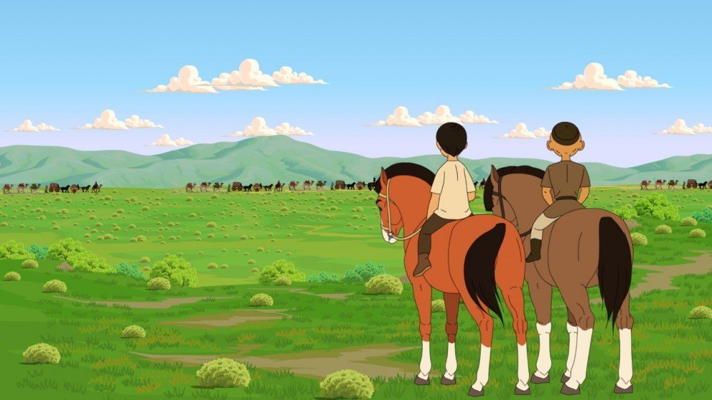
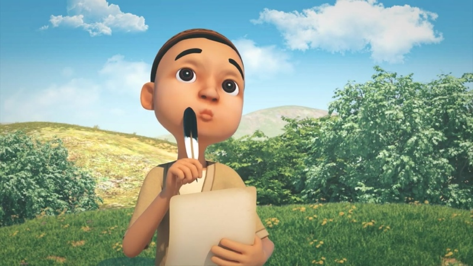

The animated film depicts the life and culture of the legendary ancient city of Otrar through the stories of two children who love their country. The spectator will be able to learn more about the Otrar Library, the second largest library in the world, and Abu Nasir al-Farabi. It also tells the story of children who realized that the enemy can be defeated not only by force but also by wisdom.

The work describes the childhood of Al-Farabi, the greatest representative of Eastern Aristotelianism, his passion for knowledge and innovation. According to historical data, the scientist was born in the town of Oksyz in the present-day Otrar district. That's why the cartoon is called "The Story of the Axis". The film was shot by "Ontustikfilm" and "SAK" film studios on behalf of Turkestan oblast akimat.
